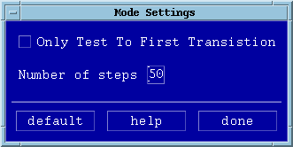

Step Mode
The step mode option lets you specify how many steps you want between your positive and negative limits. Another feature is that when it comes to a transition, no more points are tested, see "Only Test to First Transition" selected. This can be useful as fast check of your pin margin.
- Select Step Mode in the Settings pulldown menu.
A screen similar to that of the figure below appears.

- Activate the Only Test to First Transition check box.
- Key in the number of steps required, and click done when finished.